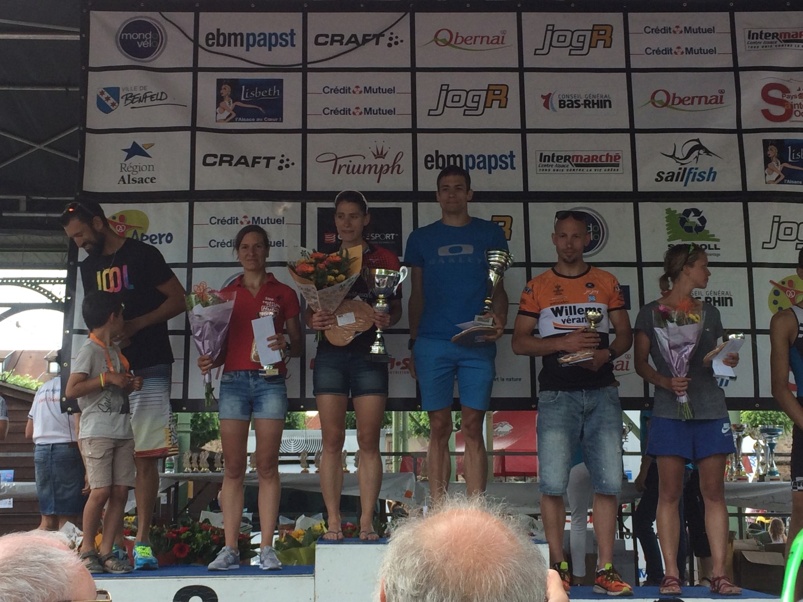

De kop is eraf, ☺! Ik had er lang naar uitgekeken en had heel veel zin om opnieuw aan de start te staan van een wedstrijd. Op zondag 4 juni stond dan eindelijk mijn eerste wedstrijd van het seizoen op het programma. Ik had er meteen een pittige uitgekozen, namelijk de halve triatlon van Obernai, in de Franse Vogezen. De wedstrijd bestond uit 2200m zwemmen in de prachtige plas Plan d’eau in Benfeld, 82km fietsen met onder meer beklimmingen van de Mont Sainte Odile, Col de la Charbonnière en Champ du Feu, goed voor 1650 hoogtemeters, en om af te sluiten een pittig loopje van zo’n een goeie 19km met bijna 350 hoogtemeters. Zeker een aanrader voor de klimmertjes!
Samen met mijn pa, Wim en trouwe trainingspartner Bruno Boudry waren we op vrijdag afgezakt richting de mooie streek van Obernai. Op zaterdag hadden we dan ook alle tijd om ons te registreren en het fietsparcours te verkennen, deels met de wagen, deels met de fiets. Meteen werd duidelijk dat het een kwestie van doseren zou worden op de fiets, de beklimmingen leken eindeloos lang te duren, ja, zelfs met de wagen… De wegen lagen er ook vrij nat en gladdig bij, niet ideaal in de afdalingen, zeker niet voor iemand met de skills zoals die van mij, ☺ Er werd tevens nog vrij veel regen voorspeld, dus het zou er alvast niet op verbeteren…
Op de dag van de wedstrijd waren de weersgoden ons beter gezind, want na een vrij regenachtige nacht kwamen de eerste zonnestralen een uurtje voor de wedstrijd stilaan door de wolken piepen. Net zo snel als de zon tevoorschijn kwam, kwam ook de wedstrijdstress de kop op steken, :-O… Ik had geen enkele voorbereidingswedstrijd en kende een moeizame winter door een aanhoudende achillespeesontsteking. Ik kon dus enkel afgaan op het stilaan beter wordende gevoel op training, maar zou dat ook resulteren in een goede wedstrijd? Ook al zag ik Obernai als pure voorbereiding op wat nog volgt, toch blijft dat competitiegevoel sterk aanwezig en wil ik steeds een mooi resultaat neerzetten.
Onder een stralende zon werd om 9u15 het verlossende startschot gegeven en konden we eindelijk de mooie plas van Benfeld induiken. Ondanks het gedrum, geduw en getrek, kon ik meteen een goed tempo vinden en nestelde ik me tussen enkele mannen. Er dienden drie ronden gezwommen te worden met twee Australian exits. Bij het ingaan van de tweede ronde waren zo goed als geen roze badmutsen (deze van de vrouwen) te bespeuren, enkel eentje op zo’n 50m voor mij, ideaal mikpunt dus. Ik bleef de roze badmuts in het vizier houden, maar veel dichter kwam ik niet. Uiteindelijk als tweede dame en met één minuut achterstand op de Nederlandse Sione Jongstra, uit het water geklauterd om aan de zware fietsproef te beginnen.
De eerste 15km waren vlak, maar tegen wind en dit betekende knokken, want de benen wilden in het begin helemaal niet mee. Gelukkig sloeg dit gevoel volledig om eenmaal we aan het klimwerk mochten beginnen, ☺. Al snel zag ik de koploopster in de verte fietsen en kwam ik langzaam dichter. Nog voor de top van de eerste beklimming kon ik Sione voorbijgaan en verder van haar wegrijden. De benen voelden goed, maar er dienden nog heel wat hoogtemeters overwonnen te worden, dus vooral niet te hard van stapel lopen… Halverwege de tweede lange klim werd ik voorbijgereden door een andere dame, de Franse Anaïs Martin. Ik probeerde te volgen en dat lukte, al moest ik hiervoor wel iets dieper gaan dan voorzien. Jammer genoeg, in mijn geval althans, komt na het klimmen ook het dalen… De banen lagen hier en daar nog nat en ik durfde geen risico’s te nemen waardoor ik mijn concurrente van me zag weg rijden. Uiteindelijk bouwde ze in het tweede fietsgedeelte nog vier minuten voorsprong op.
Ik bleef er echter in geloven en na een snelle wissel vond ik meteen de goeie loopbenen. Ook hier was het een kwestie van doseren, want per loopronde van 6,5km moest er ongeveer 110m geklommen worden. Na de eerste ronde riep mijn pa dat ik al een minuut had goedgemaakt op de eerste dame, alles kon nog... Ook bij het ingaan van de laatste 6,5km was ik opnieuw een minuut dichter gekomen. Met het idee dat de prijzen pas uitgedeeld worden aan de meet, stak ik nog een tandje bij, maar dichter dan één minuut kon ik niet komen. Als tweede dame, en als 26e op 277 finishers, overschreed ik na 4u52min de eindmeet. Mijn snelle loop, leidde uiteindelijk nog tot een extra premie door de snelste looptijd neer te zetten, ☺. (link naar de uitslag: https://www.triathlon-obernai.fr/resultats-s/)
Beetje een dubbel gevoel bij deze uitslag. Ergens mag ik heel tevreden zijn, want dit resultaat had ik voordien niet verwacht, zeker gezien de voorbereidingen niet optimaal verliepen. De conditie gaat zeker de goede richting uit, het zwemmen ging super, het fietsen behoorlijk, zeker dan het klimmen en ook mijn lopen zit opnieuw op niveau, dit ondanks de mindere loopkilometers in de winter.
Anderzijds zat ik er wel dicht bij en dat smaakt zuur natuurlijk, zeker omdat ik verloor in de afdalingen, dus bij gebrek aan durf en skills…
Belangrijkste is wel dat ik er enorm van genoten en heb en eigenlijk wel heel blij mag zijn dat ik opnieuw kan racen. Dit smaakt dus naar meer en met veel goeie moed en goesting werk ik verder aan wat nog volgt, ☺. Mijn volgende grote uitdaging is de Ironman van Nice op 23 juli…
Bedankt Wim, pa en Bruno voor het super leuke weekend en jullie steun en aanmoedigingen. Ook een dank je wel aan alle andere supporters voor jullie leuke en lieve berichten zowel voor als na de wedstrijd. Het doet me steeds enorm veel deugd te zien hoe jullie me volgen!